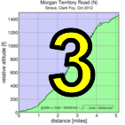

|  |  |
 |

|
| organizers Team Brown Zone post at summit (Brenda Brunner) |
Low-Key's first visit to West Highway 9 was a spectacular success as Team Brown Zone organized an excellent time for all. After registering in the Rainbow Cafe in Boulder Creek, riders headed to the road kill marking the official start line to begin their 13-mile trip to Saratoga Gap, the summit of Highway 9.
The course was in the tradition of Tour de France mountain time trials, where instead of starting at the base of the climb, it's common for the course to include a relatively flat run-up before the serious climbing. Combine the opening 6 miles of relative flat along with the final mile being flat and you had the classic question: aero or light? Riders with both had to pick whether to use their time trial frame or their road frame. The classic answer, based on the assumption of constant power, is the aero frame: all of that flatness should give a significant advantage to the aero bike which offsets the increase in weight. However, this analysis assumes constant power, and without a significant amount of practice on a time trial frame, that may be optimistic.
The results perhaps showed this, as men's winner Rob Manchester beat the more aero competition on his fairly conventional Specialized Roubaix. Indeed lack of power is not Rob's issue, as anyone who's ridden with him can attest. Despite this, it was still very impressive seeing him finish ahead of accomplished racers like Adrien Costa, Clark Foy, Kieran Sherlock, "Rich Brown", Daryl Spano, and more. Adrien finished a strong second in his Planet X time trial rig, while Rich Brown rode a conventional frame to third place. Josh Pizzica and Kieran Sherlock rounded out the top 5.
On the women's side, it was once again Lisa Penzel continuing her series of firsts. Her Brown Zone teammate Lynn Sestak was once again second, while Amy Cemeron, Janet Martinez, and "Roxy Brown" completed the top five.
We almost had four tandems today, but a travel snafu left Will Van Kaenel to ride solo without his trusty partner Lynn. Still, seeing three tandems out there battling for the new tandem ranking was encouraging. It was the Pauls: McKenzie and Chuck, who were the fastest, with an excellent score of 111 points. Tracy and Hadley Colwell finished second, despite Hadley clearly doing the bulk of the work. Another mixed tandem, David and Rachel Engelbrecht, finished a solid third.
Yours truly was the sole runner on the day.
On the team side, it's appropriate it was Team Brown Zone in first, with their excellent organization of the day's fun. Sisters and Misters and Western Wheelers were a very solid second and third, while Eden Bicycles was an impressive fourth and local team Bike Trip finished fifth despite the inability of some of their strongest riders to make the start.
Thanks once again to our fantastic volunteers, including starters, split timers, and of course the finish line crew led by Howard Kveck. Expert starter Ron Brunner, with no warm-up, self-timed at the end of the day to an excellent time of 55:20.
Strava T-shirt qualifiers indicated with orange background. Note riders can only qualify once per series, so may not be listed even if they beat the target time for this week.
| pl | # | name | team | cat | time | mph | fph | score |
|---|---|---|---|---|---|---|---|---|
| 1 | 129 | Lisa Penzel | The Brown Zone | 45+ | 55:36 | 14.31 | 2220 | 127.28 |
| 2 | 146 | Lynn Sestak | The Brown Zone | 50+ | 58:48 | 13.53 | 2099 | 119.26 |
| 3 | 305 | Amy Cameron | Sr's & Mr's of No Mercy | 30+ | 59:08 | 13.45 | 2087 | 118.48 |
| 4 | 8 | Janet Martinez | Sr's & Mr's of No Mercy | 59:29 | 13.38 | 2075 | 117.67 | |
| 5 | 403 | Roxy Brown | The Brown Zone | 40+ | 62:47 | 12.67 | 1966 | 110.50 |
| 6 | 404 | Sugar Brown | The Brown Zone | Brown | 62:51 | 12.66 | 1964 | 110.36 |
| 7 | 215 | Laura Hipp | Western Wheelers | 4 | 62:53 | 12.65 | 1963 | 110.30 |
| 8 | 79 | Lisa Emmerich | Sr's & Mr's of No Mercy | 50+ | 65:28 | 12.15 | 1885 | 105.25 |
| 9 | 408 | Julie Colwell | Team Colwell | 40+ | 67:12 | 11.84 | 1837 | 102.10 |
| 10 | 422 | Sandra King | Team Fremont FFBC p/b Chipotle | 40+ | 68:08 | 11.68 | 1811 | 100.47 |
| 11 | 311 | Heidi Fraser | Taleo Racing | 50+ | 69:42 | 11.41 | 1771 | 97.85 |
| 12 | 91 | Hannah Hausman | Hausbert | 20+ | 71:03 | 11.20 | 1737 | 95.69 |
| 13 | 440 | Darlene Stevenson | 40+ | 80:58 | 9.83 | 1524 | 82.19 | |
| 14 | 94 | Christine Holmes | Low-Key | 45+ | 82:06 | 9.69 | 1503 | 80.87 |
| 15 | 312 | Andrea Ivan | Silicon Valley Triathlon | 82:41 | 9.62 | 1493 | 80.21 | |
| 16 | 42 | Judy Colwell & Rufus | Team Colwell | 70+ | 97:59 | 8.12 | 1260 | 65.83 |
| 17 | 423 | Nina Komlik | 45+ | 102:24 | 7.77 | 1205 | 62.54 |
reference time for division Women = 68:24
| pl | # | name | team | cat | time | mph | fph | score |
|---|---|---|---|---|---|---|---|---|
| 1 | 120 | Rob Manchester | 35+ | 46:20 | 17.17 | 2664 | 126.51 | |
| 2 | 69 | Adrien Costa | Slipstream-Craddock Jr. Development | Junior | 47:31 | 16.74 | 2597 | 122.85 |
| 3 | 38 | Rich Brown | The Brown Zone | 35+ | 48:14 | 16.49 | 2559 | 120.73 |
| 4 | 131 | Josh Pizzica | Gene-Solve/Etxea | 35+ | 48:20 | 16.46 | 2554 | 120.44 |
| 5 | 438 | Kieran Sherlock | Western Wheelers | 45+ | 48:24 | 16.44 | 2550 | 120.25 |
| 6 | 212 | Clark Foy | Western Wheelers | 45+ | 48:26 | 16.43 | 2548 | 120.15 |
| 7 | 56 | Tim Clark | Low-Key | 45+ | 48:30 | 16.40 | 2545 | 119.96 |
| 8 | 230 | Carl Nielson | Sr's & Mr's of No Mercy | 50+ | 48:32 | 16.39 | 2543 | 119.86 |
| 9 | 213 | Chris Furgiuele | Dolce Vita Cycling | 35+ | 49:49 | 15.97 | 2477 | 116.28 |
| 10 | 44 | Ciaran Byrne | Sr's & Mr's of No Mercy | 40+ | 49:56 | 15.93 | 2472 | 115.96 |
| 11 | 125 | Alan Nevin | IronData Thirsty Bear | 40+ | 49:58 | 15.92 | 2470 | 115.87 |
| 12 | 239 | Dennis Van Hoof | Type 1 Diabetes | 35+ | 50:17 | 15.82 | 2454 | 115.02 |
| 13 | 71 | Robby Cuthbert | Hausbert | 20+ | 50:43 | 15.69 | 2434 | 113.88 |
| 14 | 434 | Stefano Profumo | Bike Trip/Symantec | 30+ | 51:05 | 15.57 | 2416 | 112.93 |
| 15 | 149 | Daryl Spano | San Jose Bike Club | 45+ | 51:27 | 15.46 | 2399 | 112.00 |
| 16 | 411 | Geoff Drake | Bike Trip/Symantec | 50+ | 52:02 | 15.29 | 2372 | 110.54 |
| 17 | 416 | David Gonzales | 35+ | 52:15 | 15.23 | 2362 | 110.00 | |
| 18 | 231 | Travis Retzer | Eden Bicycles | 4 | 52:23 | 15.19 | 2356 | 109.68 |
| 19 | 246 | Chris Kovacs | Eden Bicycles | 35+ | 52:25 | 15.18 | 2355 | 109.60 |
| 20 | 443 | H Two Brown | The Brown Zone | 50- | 52:39 | 15.11 | 2344 | 109.03 |
| 21 | 412 | Rob Easley | Sr's & Mr's of No Mercy | 45+ | 52:50 | 15.06 | 2336 | 108.59 |
| 22 | 108 | Joe Karbowski | 30+ | 53:25 | 14.89 | 2311 | 107.21 | |
| 23 | 70 | Andy Crews | Diablo | 40+ | 53:26 | 14.89 | 2310 | 107.17 |
| 24 | 421 | Mark King | IC3 Hammer Nutrition | 45+ | 53:45 | 14.80 | 2296 | 106.44 |
| 25 | 324 | Edvard Wendelin | 25+ | 54:08 | 14.70 | 2280 | 105.56 | |
| 26 | 417 | Brian Haines | Taleo Racing | 35+ | 54:20 | 14.64 | 2272 | 105.11 |
| 27 | 80 | Joe Fant | The Brown Zone | 50+ | 54:27 | 14.61 | 2267 | 104.85 |
| 28 | 46 | Gonzalo Carrillo | Team Fremont FFBC p/b Chipotle | 45+ | 55:24 | 14.36 | 2228 | 102.76 |
| 28 | 39 | Slow Brown | The Brown Zone | Two Flat Tires | 55:24 | 14.36 | 2228 | 102.76 |
| 30 | 419 | Sunil Jagadish | San Jose Bike Club | 25+ | 55:26 | 14.35 | 2226 | 102.69 |
| 31 | 410 | Bryn Dole | Blekko | 40+ | 55:41 | 14.29 | 2216 | 102.15 |
| 32 | 73 | J.D. Daniels | Eden Bicycles | 35+ | 56:16 | 14.14 | 2193 | 100.92 |
| 33 | 37 | Dino Brown | The Brown Zone | Dual Suspension Beast | 56:19 | 14.13 | 2192 | 100.82 |
| 34 | 78 | Bill Dvorak | 55+ | 56:20 | 14.12 | 2191 | 100.78 | |
| 35 | 104 | Anthony Jawad | 25+ | 56:37 | 14.05 | 2180 | 100.19 | |
| 36 | 130 | Jim Perreira | 45+ | 56:58 | 13.97 | 2167 | 99.48 | |
| 37 | 450 | Brad Fox | LGBRC | 30+ | 57:14 | 13.90 | 2156 | 98.94 |
| 38 | 99 | Peter Ingram | Ind. | 55+ | 58:05 | 13.70 | 2125 | 97.26 |
| 39 | 240 | David Vrane | Sr's & Mr's of No Mercy | 45+ | 58:10 | 13.68 | 2122 | 97.09 |
| 40 | 317 | Thomas Rabedeau | SLACer | 55+ | 58:30 | 13.60 | 2110 | 96.45 |
| 41 | 400 | Ramon Alarcon | San Jose Bike Club | 40+ | 58:56 | 13.50 | 2094 | 95.63 |
| 42 | 81 | Rick Ferrell | Bike Trip/Symantec | 50+ | 59:36 | 13.35 | 2071 | 94.38 |
| 43 | 76 | Pierre Doussiere | Mysef | 50+ | 59:38 | 13.34 | 2070 | 94.32 |
| 44 | 110 | Franz Kelsch | Pan y Agua | 65 Almost | 59:41 | 13.33 | 2068 | 94.23 |
| 45 | 135 | Mihai R. | 30+ | 59:59 | 13.26 | 2058 | 93.68 | |
| 46 | 45 | Pat Callahan | Quadzilla Racing | 40+ | 60:25 | 13.17 | 2043 | 92.90 |
| 47 | 12 | Will von Kaenel | LGBRC | 50+ | 60:57 | 13.05 | 2025 | 91.95 |
| 47 | 65 | Kevin Comerford | Sr's & Mr's of No Mercy | 30+ | 60:57 | 13.05 | 2025 | 91.95 |
| 49 | 43 | Scott Byer | 45+ | 61:06 | 13.02 | 2020 | 91.69 | |
| 50 | 401 | Nick Bellomo | Type 1 Diabetes | 30+ | 61:20 | 12.97 | 2012 | 91.29 |
| 51 | 133 | Thomas Preisler | LGBRC | 55+ | 61:24 | 12.96 | 2010 | 91.17 |
| 52 | 300 | MichaelsJ. Andalora | Bike Trip/Symantec | 60+ | 61:46 | 12.88 | 1998 | 90.54 |
| 53 | 234 | Tommy Aldo Sonin | 30+ | 62:02 | 12.83 | 1990 | 90.09 | |
| 54 | 98 | Brandon Iles | 30+ | 62:21 | 12.76 | 1979 | 89.56 | |
| 55 | 160 | Greg Watson | Palo Verde Velo | 45+ | 62:40 | 12.70 | 1969 | 89.03 |
| 56 | 169 | Nic Brummell | Atlas | 50+ | 63:11 | 12.59 | 1953 | 88.18 |
| 57 | 127 | Bart Niechwiej | 35+ | 63:45 | 12.48 | 1936 | 87.27 | |
| 58 | 31 | George Bonanto | Clydesdale | 64:00 | 12.43 | 1928 | 86.88 | |
| 59 | 143 | Wink Saville | 60+ | 64:09 | 12.40 | 1924 | 86.64 | |
| 60 | 437 | Eddie Santos | 25+ | 64:26 | 12.35 | 1915 | 86.20 | |
| 61 | 431 | Edward Miller | SLACer | 70+ | 64:38 | 12.31 | 1910 | 85.89 |
| 62 | 26 | Bernard Bell | 50+ | 64:41 | 12.30 | 1908 | 85.81 | |
| 63 | 84 | Stephen Fong | CyclePath Racing | 45+ | 65:17 | 12.19 | 1891 | 84.89 |
| 64 | 48 | Peter Cathcart | San Jose Bike Club | 50+ | 65:46 | 12.10 | 1877 | 84.17 |
| 65 | 428 | Russ McCrary | Sr's & Mr's of No Mercy | 50+ | 65:57 | 12.06 | 1871 | 83.89 |
| 66 | 405 | Steve Bursley | Team Wild Hare | 45+ | 66:10 | 12.02 | 1865 | 83.57 |
| 67 | 58 | Kevin Colagiovanni | Team DUD | 25+ | 66:18 | 12.00 | 1862 | 83.38 |
| 68 | 85 | Danny Froeming | 45+ | 66:48 | 11.91 | 1848 | 82.65 | |
| 69 | 141 | Nico Sallembien | Silicon Valley Triathlon | 35+ | 67:28 | 11.79 | 1829 | 81.70 |
| 70 | 68 | Alex Cortez | Team Fremont FFBC p/b Chipotle | 40+ | 67:41 | 11.75 | 1823 | 81.40 |
| 71 | 60 | Fernando Colmenares | Team Fremont FFBC p/b Chipotle | 65+ | 68:01 | 11.70 | 1815 | 80.94 |
| 72 | 426 | Thomas Maltbaek | MTBR | 20+ | 68:13 | 11.66 | 1809 | 80.66 |
| 73 | 430 | Kris McQueen | Diablo | 35+ | 69:52 | 11.39 | 1767 | 78.45 |
| 74 | 126 | Ronald Ng | 45+ | 70:28 | 11.29 | 1751 | 77.67 | |
| 75 | 441 | Han Wen | GOM | 40+ | 71:13 | 11.17 | 1733 | 76.72 |
| 76 | 225 | Thomas Maslen | Western Wheelers | 50+ | 73:09 | 10.88 | 1687 | 74.36 |
| 77 | 442 | Matt Wittmann | 25+ | 80:08 | 9.93 | 1540 | 66.88 | |
| 78 | 63 | Skyler Colwell | Team Colwell | Junior | 93:35 | 8.50 | 1319 | 55.83 |
| 79 | 62 | Liam Colwell | Team Colwell | Junior | 129:33 | 6.14 | 953 | 38.24 |
reference time for division Men = 56:42
| pl | # | name | team | cat | time | mph | fph | score |
|---|---|---|---|---|---|---|---|---|
| 1 | 406 | Paul Chuck | Sr's & Mr's of No Mercy | 55+ | 52:47 | 15.07 | 2338 | 108.71 |
| 429 | Paul McKenzie | Sr's & Mr's of No Mercy | 55+ | |||||
| 2 | 64 | Tracy Colwell | Team Colwell | 40+ | 73:36 | 10.81 | 1677 | 82.84 |
| 61 | Hadley Colwell | Team Colwell | Junior | |||||
| 3 | 414 | David Engelbrecht | Summit Chuters | 40+ | 105:51 | 7.52 | 1166 | 48.38 |
| 415 | Rachel Engelbrecht | Summit Chuters | 10/15/2012 |
| pl | # | name | team | cat | time | mph | fph | score |
|---|---|---|---|---|---|---|---|---|
| 1 | 1 | Daniel Connelly | Low-Key | 3 | 112:52 | 7.05 | 1094 | 44.90 |
reference time for division Male Runner = 56:42
| pl | team | score | riders |
|---|---|---|---|
| 1 | The Brown Zone | 367.27 | Rich Brown, H Two Brown, Joe Fant, Slow Brown, Lisa Penzel, Dino Brown, Lynn Sestak, Roxy Brown, Sugar Brown |
| 2 | Sr's & Mr's of No Mercy | 356.01 | Carl Nielson, Ciaran Byrne, Paul Chuck, Paul McKenzie, Rob Easley, David Vrane, Amy Cameron, Janet Martinez, Kevin Comerford, Lisa Emmerich, Russ McCrary |
| 3 | Western Wheelers | 350.70 | Kieran Sherlock, Clark Foy, Laura Hipp, Thomas Maslen |
| 4 | Eden Bicycles | 320.19 | Travis Retzer, Chris Kovacs, J.D. Daniels |
| 5 | Bike Trip/Symantec | 317.85 | Stefano Profumo, Geoff Drake, Rick Ferrell, MichaelsJ. Andalora |
| 6 | San Jose Bike Club | 310.31 | Daryl Spano, Sunil Jagadish, Ramon Alarcon, Peter Cathcart |
| 7 | 285.57 | Anthony Jawad, Mihai R., Scott Byer, Brandon Iles, Bart Niechwiej, George Bonanto, Wink Saville | |
| 8 | Team Fremont FFBC p/b Chipotle | 284.63 | Gonzalo Carrillo, Alex Cortez, Fernando Colmenares, Sandra King |
| 9 | LGBRC | 282.06 | Brad Fox, Will von Kaenel, Thomas Preisler |
| 10 | Team Colwell | 267.77 | Julie Colwell, Tracy Colwell, Hadley Colwell, Skyler Colwell, Judy Colwell & Rufus, Liam Colwell |
| 11 | Low-Key | 245.73 | Tim Clark, Christine Holmes, Daniel Connelly |
| 12 | Hausbert | 209.57 | Robby Cuthbert, Hannah Hausman |
| 13 | Type 1 Diabetes | 206.31 | Dennis Van Hoof, Nick Bellomo |
| 14 | Taleo Racing | 202.96 | Brian Haines, Heidi Fraser |
| 15 | Diablo | 185.62 | Andy Crews, Kris McQueen |
| 16 | SLACer | 182.34 | Thomas Rabedeau, Edward Miller |
| 17 | Silicon Valley Triathlon | 161.91 | Nico Sallembien, Andrea Ivan |
| 18 | Slipstream-Craddock Jr. Development | 122.85 | Adrien Costa |
| 19 | Gene-Solve/Etxea | 120.44 | Josh Pizzica |
| 20 | Dolce Vita Cycling | 116.28 | Chris Furgiuele |
| 21 | IronData Thirsty Bear | 115.87 | Alan Nevin |
| 22 | IC3 Hammer Nutrition | 106.44 | Mark King |
| 23 | Blekko | 102.15 | Bryn Dole |
| 24 | Ind. | 97.26 | Peter Ingram |
| 25 | Summit Chuters | 96.75 | David Engelbrecht, Rachel Engelbrecht |
| 26 | Mysef | 94.32 | Pierre Doussiere |
| 27 | Pan y Agua | 94.23 | Franz Kelsch |
| 28 | Quadzilla Racing | 92.90 | Pat Callahan |
| 29 | Palo Verde Velo | 89.03 | Greg Watson |
| 30 | Atlas | 88.18 | Nic Brummell |
| 31 | CyclePath Racing | 84.89 | Stephen Fong |
| 32 | Team Wild Hare | 83.57 | Steve Bursley |
| 33 | Team DUD | 83.38 | Kevin Colagiovanni |
| 34 | MTBR | 80.66 | Thomas Maltbaek |
| 35 | GOM | 76.72 | Han Wen |